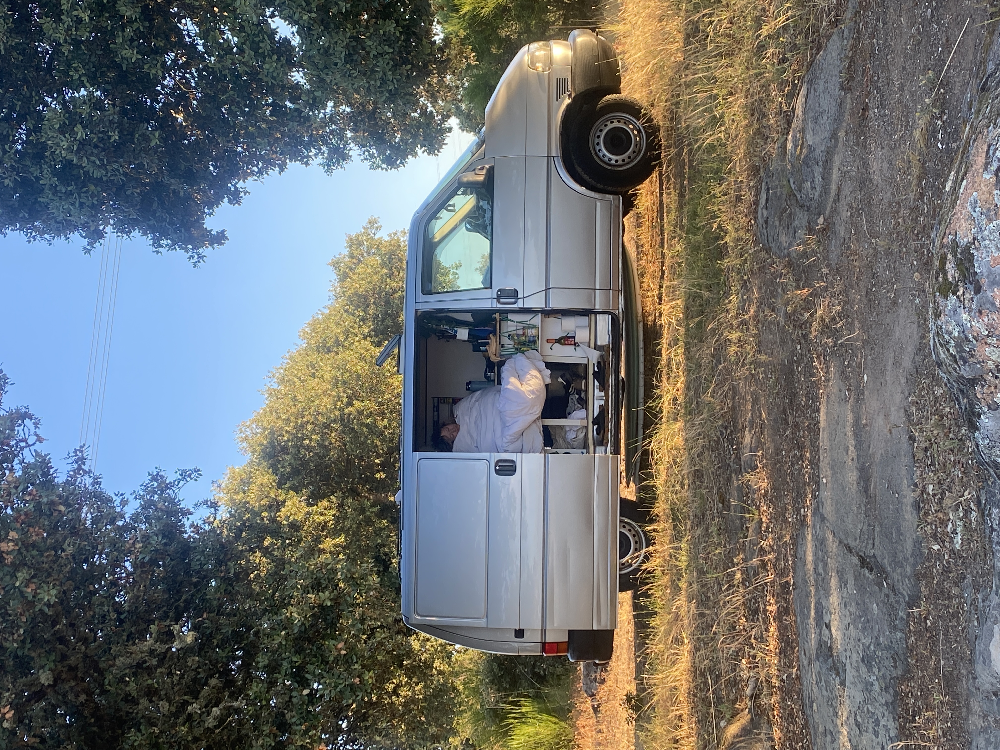
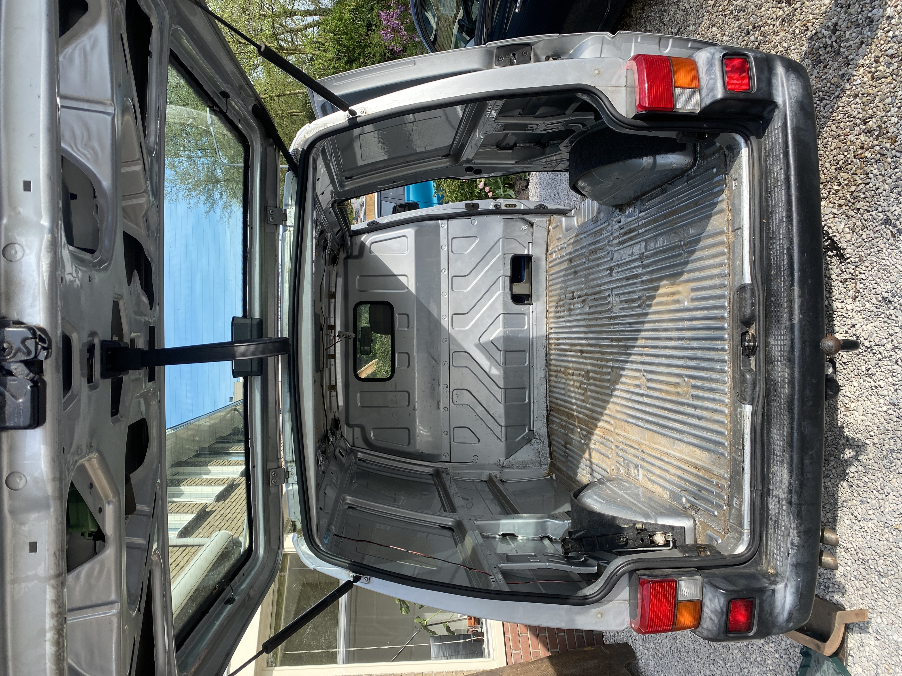
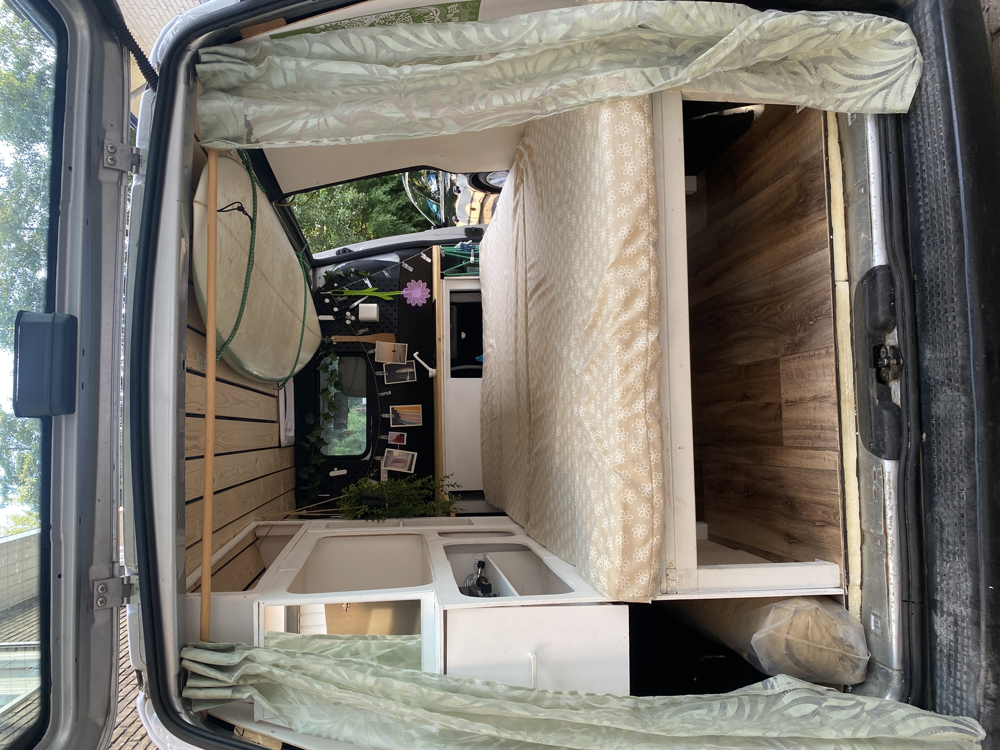

Vanlife
In the start of 2024, just after I got back from teaching snowboarding and skiing in Grindelwald, Switzerland. I bought a small Volkswagen T4 van and wanted to convert this into a minivan and roadtrip the west coast of europe to surf as much as possible. This is for sure the biggest financial and also technical project I have done and it was scary, but insanely fun. The amount of things I learned while building it and while travelling is something that will stick with me my whole life.
This project did not go all smooth ofcourse and I definetly would love to do it again and use what I have learned to create an even nicer campervan. It was a big lesson to take the risk of buying a van without knowing if it will even drive more then 100km before breaking down, I mean it was at the time 22 years old. If I would have not done it because i was too afraid to lose money and time I would have missed out on all the amazing adventures I got to do with my girlfriend.

Our first night at a off road camping location.


On the left the van before the conversion and on the right after the conversion.

The route we took on our roadtrip.